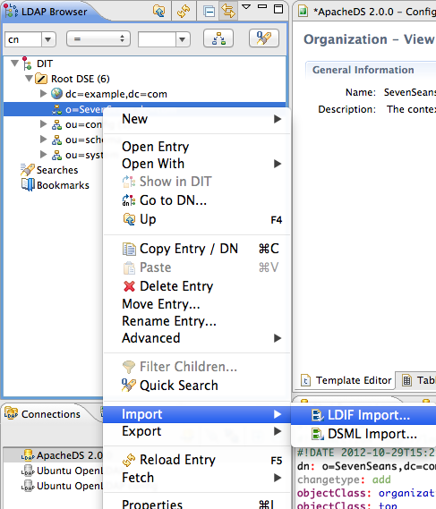
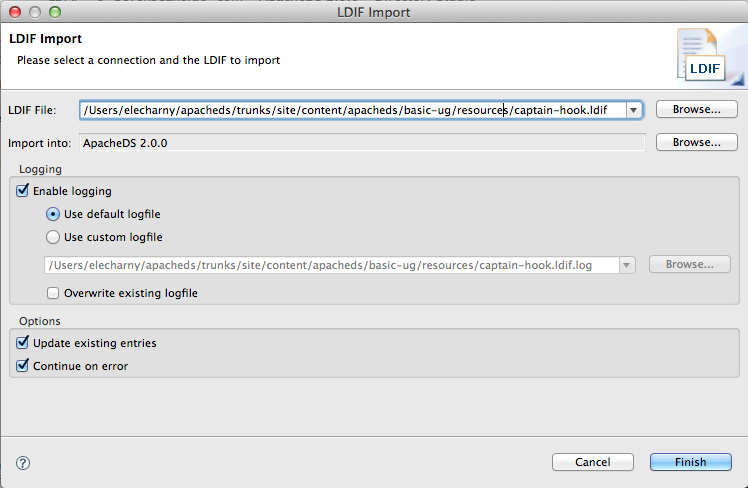

ApacheDS 2.0
Downloads
Documentation
- Basic User Guide
- Advanced User Guide
- Developer Guide
- Kerberos User Guide
- Configuration
- JavaDocs
- Cross-Reference
Support
Community
About Apache
2.1.1 - Adding Entries
We will see how to add new entries into the server. Assuming that we have already created a partition (see Adding a partition), we will use this added partition as a root for the entry addition. We will also create the ou=people entry.
We try to add a new user to the “Seven Seas” partition. The data for the entry is inspired by “Peter Pan” and provided by this LDIF file (Captain hook):
# File captain_hook.ldif
dn: ou=people,o=sevenSeas
objectclass: organizationalUnit
objectclass: top
ou: people
dn: cn=James Hook,ou=people,o=sevenSeas
objectclass: inetOrgPerson
objectclass: organizationalPerson
objectclass: person
objectclass: top
cn: James Hook
description: A pirate captain and Peter Pan's nemesis
sn: Hook
mail: jhook@neverland
userpassword: peterPan
The first entry creates the ou=people container, which is necessary otherwise we can’t inject the second entry.
Using the command line
You have to use an authorized user to inject the entry, here, cn=Horatio Nelson,ou=people,o=sevenSeas :
$ ldapmodify -h zanzibar -p 10389 -D "cn=Horatio Nelson,ou=people,o=sevenSeas" -w pass \\
-a -f captain_hook.ldif
adding new entry cn=James Hook,ou=people,o=sevenSeas
$
Afterwards a new entry is successfully created within the “Seven Seas” partition by user “Horatio Nelson”. The ‘+’ sign in the attributes list of the ldapsearch command causes ApacheDS to return the operational attributes, which demonstrate this.
$ ldapsearch -h zanzibar -p 10389 -b "o=sevenSeas" -s sub "(cn=James Hook)" +
version: 1
dn: cn=James Hook,ou=people,o=sevenSeas
accessControlSubentries: cn=sevenSeasAuthorizationRequirementsACISubentry,o=sevenSeas
creatorsName: cn=Horatio Nelson,ou=people,o=sevenSeas
createTimestamp: 20061203140109Z
Using Apache Directory Studio
Once connected on the server with studio, you should be able to inject new entries -assuming you have the sufficent priviledge - :

Then select the LDIF file containing the entry :

When imported, the log windows should contain this message :
#!RESULT OK
#!CONNECTION ldap://localhost:10389
#!DATE 2012-10-30T14:36:21.294
dn: ou=people,o=sevenSeas
changetype: add
ou: people
objectclass: organizationalUnit
objectclass: top
#! RESULT OK
#! CONNECTION ldap://localhost:10389
#! DATE 2012-10-30T14:36:21.320
dn: cn=James Hook,ou=people,o=sevenSeas
changetype: add
mail: jhook@neverland
userpassword: peterPan
description: A pirate captain and Peter Pan's nemesis
objectclass: inetOrgPerson
objectclass: organizationalPerson
objectclass: person
objectclass: top
sn: Hook
cn: James Hook
This is it for this basic introduction on how to add entries in the server. There are other ways, like using and LDAP API, to do the same thing.